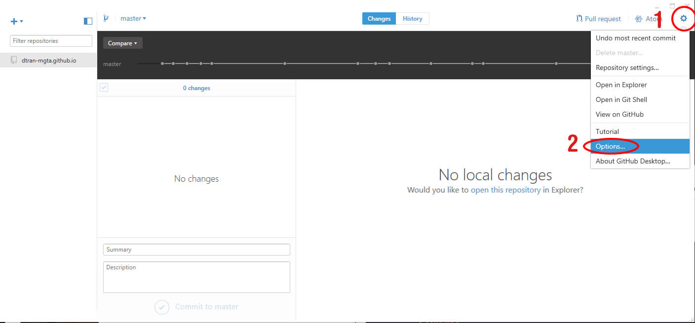
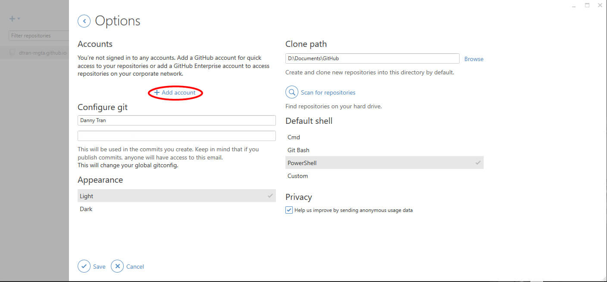
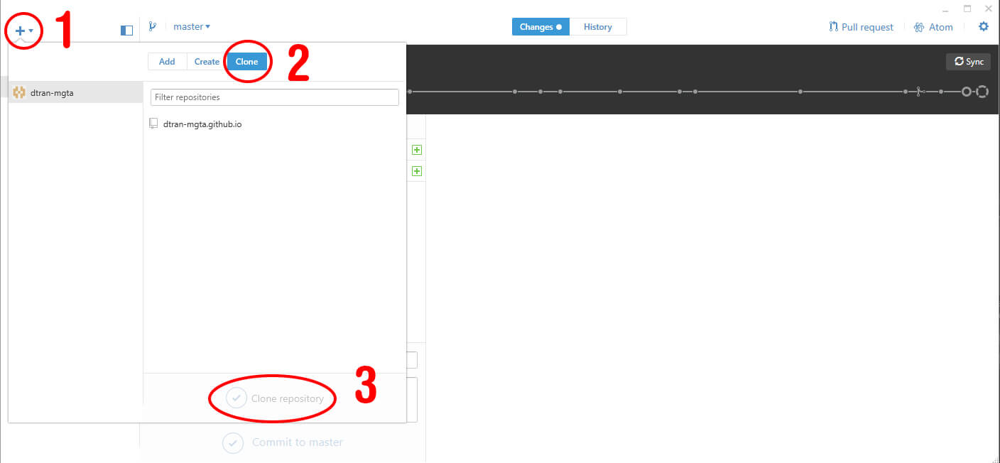
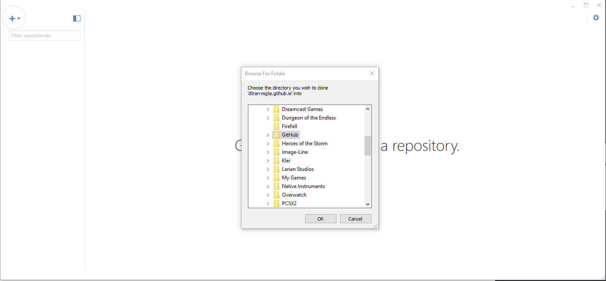

Setting Up at Home
For students wishing to continue their work at home, here are the steps to get you started. First download and install the software
Software
The tools used in the class are all available online for free.
Using a text editor specific to coding is not required but very helpful as it can do things like highlight your code so your eyes can follow your code or autocomplete elements.
Brackets is our text editor of choice for the course as it allows a quick and easy option to view changes to your code with its live preview tool and
color picker for choosing color without needing to know the code value for a color.
Git is version control system used for keeping track of changes in a directory. The records, amongst other data including the files themselves, are kept in what's called a repository.
GitHub is a service that provides an online host for repositories. Finally, GitHub Desktop is the desktop application we use to interact with GitHub services and logging changes. Lessons in Git and GitHub are
outside the scope of the course and aren't required for web development, but using these technologies, we found that it was the best way for the students not to loose their work, not rely on
remembering to bring a flashdrive, and most importantly, host their website for free. Students were given the basic skills with GitHub to get their site up and running.
First Time Set Up with GitHub Desktop
After installing GitHub Desktop, you will need to sign in.


After signing in, you will need to download your files to your computer, in Git, this is known as cloning your repository

When you get to this screen, where you choose where to clone down your files, your folders will be a little different. You may choose which ever folder you'd like to keep your files as long as you remember where it is.

You should now have all your files we've worked on in class.